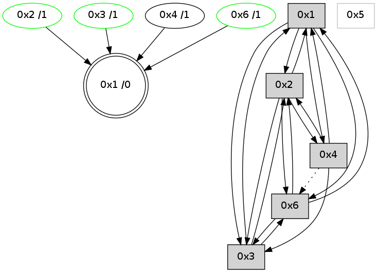

>> << IDX [start] -100 -25 -5 +0 +5 +25 +100 [720.103895187]
 Previous packets
----------------------------------------------------------------------
715.182809 beacon01(adaf) #0 coord=01,02,05,03,04,06 cycle=432.0ms assoc
-- color-indic=0 64 49 48
715.192769 beacon02(adaf) #0 coord=01,02,05,03,04,06 cycle=432.0ms assoc 64 18 b7
715.202770 beacon05(adaf) #0 coord=01,02,05,03,04,06 cycle=432.0ms assoc 64 be 9d
715.212770 beacon03(adaf) #0 coord=01,02,05,03,04,06 cycle=432.0ms assoc 64 22 b9
715.222771 beacon04(adaf) #0 coord=01,02,05,03,04,06 cycle=432.0ms assoc 64 84 93
715.232771 beacon06(adaf) #0 coord=01,02,05,03,04,06 cycle=432.0ms assoc 64 f0 8f
715.244485 [Hello(2): seq=1008 sym=6,1,3 asym=4 sysInfo= stat=6:4,0,1,1/1:9,0,7,0/3:7,0,3,6/4:3,0,2,0]
715.247731 [STC(1) #0.31 to-color d=0]
----------------------------------------------------------------------
715.674920 beacon01(adaf) #0 coord=01,02,05,03,04,06 cycle=432.0ms assoc
-- color-indic=0 64 05 f8
715.684880 beacon02(adaf) #0 coord=01,02,05,03,04,06 cycle=432.0ms assoc 64 54 07
715.694881 beacon05(adaf) #0 coord=01,02,05,03,04,06 cycle=432.0ms assoc 64 f2 2d
715.704884 beacon03(adaf) #0 coord=01,02,05,03,04,06 cycle=432.0ms assoc 64 6e 09
715.714882 beacon04(adaf) #0 coord=01,02,05,03,04,06 cycle=432.0ms assoc 64 c8 23
715.724883 beacon06(adaf) #0 coord=01,02,05,03,04,06 cycle=432.0ms assoc 64 bc 3f
715.736649 [STC(2)->1 #0.31 stable,to-color d=1]
715.737904 [Hello(1): seq=417 sym=2,3 sysInfo= stat=2:5,0,5,5/3:4,0,7,7]
715.740525 [Hello(4): seq=518 sym=3,1,2 asym=6 sysInfo= stat=3:6,0,10,8/1:9,0,10,0/2:2,0,0,0/6:1,0,0,0]
715.742452 [Hello(3): seq=516 sym=2,1,6 sysInfo=hasWarning stat=2:2,0,0,0/1:13,0,6,0/6:11,0,11,3]
715.744377 [STC(4)->1 #0.31 to-color d=1]
715.746009 [TreeStatus(2)-.->1 #0.31 stable child=1]
715.754713 [STC(3)->1 #0.31 stable,to-color d=1]
715.758613 [TreeStatus(3)-.->1 #0.31 stable child=1]
----------------------------------------------------------------------
716.167029 beacon01(adaf) #0 coord=01,02,05,03,04,06 cycle=432.0ms assoc
-- color-indic=0 64 c1 97
716.176990 beacon02(adaf) #0 coord=01,02,05,03,04,06 cycle=432.0ms assoc 64 90 68
716.186990 beacon05(adaf) #0 coord=01,02,05,03,04,06 cycle=432.0ms assoc 64 36 42
716.196990 beacon03(adaf) #0 coord=01,02,05,03,04,06 cycle=432.0ms assoc 64 aa 66
716.206992 beacon04(adaf) #0 coord=01,02,05,03,04,06 cycle=432.0ms assoc 64 0c 4c
716.216991 beacon06(adaf) #0 coord=01,02,05,03,04,06 cycle=432.0ms assoc 64 78 50
716.228668 [Hello(2): seq=1009 sym=6,1,3 sysInfo= stat=6:4,0,2,1/1:10,0,8,0/3:7,0,3,6]
----------------------------------------------------------------------
716.659136 beacon01(adaf) #0 coord=01,02,05,03,04,06 cycle=432.0ms assoc
-- color-indic=0 64 8c 90
716.669099 beacon02(adaf) #0 coord=01,02,05,03,04,06 cycle=432.0ms assoc 64 dd 6f
716.679098 beacon05(adaf) #0 coord=01,02,05,03,04,06 cycle=432.0ms assoc 64 7b 45
716.689098 beacon03(adaf) #0 coord=01,02,05,03,04,06 cycle=432.0ms assoc 64 e7 61
716.699100 beacon04(adaf) #0 coord=01,02,05,03,04,06 cycle=432.0ms assoc 64 41 4b
716.709098 beacon06(adaf) #0 coord=01,02,05,03,04,06 cycle=432.0ms assoc 64 35 57
716.720772 [Hello(3): seq=517 sym=2,1,6 sysInfo=hasWarning stat=2:3,0,0,0/1:13,0,6,0/6:11,0,11,3]
716.724481 [Hello(4): seq=519 sym=3,1,2 asym=6 sysInfo= stat=3:6,0,10,8/1:9,0,10,0/2:3,0,0,1/6:1,0,0,0]
716.727035 [Hello(1): seq=418 sym=2,4,3,6 sysInfo= stat=2:6,0,5,6/4:0,0,1,0/3:4,0,7,7/6:0,0,1,1]
----------------------------------------------------------------------
717.151245 beacon01(adaf) #0 coord=01,02,05,03,04,06 cycle=432.0ms assoc
-- color-indic=0 64 48 ff
717.161206 beacon02(adaf) #0 coord=01,02,05,03,04,06 cycle=432.0ms assoc 64 19 00
717.171206 beacon05(adaf) #0 coord=01,02,05,03,04,06 cycle=432.0ms assoc 64 bf 2a
717.181206 beacon03(adaf) #0 coord=01,02,05,03,04,06 cycle=432.0ms assoc 64 23 0e
717.191206 beacon04(adaf) #0 coord=01,02,05,03,04,06 cycle=432.0ms assoc 64 85 24
717.201207 beacon06(adaf) #0 coord=01,02,05,03,04,06 cycle=432.0ms assoc 64 f1 38
717.212916 [Hello(2): seq=1010 sym=4,6,1,3 sysInfo= stat=4:0,0,0,0/6:4,0,2,1/1:11,0,8,0/3:7,0,3,6]
----------------------------------------------------------------------
717.643354 beacon01(adaf) #0 coord=01,02,05,03,04,06 cycle=432.0ms assoc
-- color-indic=0 64 04 4f
717.653315 beacon02(adaf) #0 coord=01,02,05,03,04,06 cycle=432.0ms assoc 64 55 b0
717.663315 beacon05(adaf) #0 coord=01,02,05,03,04,06 cycle=432.0ms assoc 64 f3 9a
717.673316 beacon03(adaf) #0 coord=01,02,05,03,04,06 cycle=432.0ms assoc 64 6f be
717.683315 beacon04(adaf) #0 coord=01,02,05,03,04,06 cycle=432.0ms assoc 64 c9 94
717.693318 beacon06(adaf) #0 coord=01,02,05,03,04,06 cycle=432.0ms assoc 64 bd 88
717.704709 [Hello(1): seq=419 sym=2,4,3,6 sysInfo= stat=2:7,0,5,6/4:0,0,1,0/3:4,0,7,7/6:0,0,1,1]
717.708691 [Hello(4): seq=520 sym=3,1,2 asym=6 sysInfo= stat=3:6,0,10,8/1:10,0,10,0/2:4,0,0,1/6:1,0,0,0]
717.716113 [STC(1) #0.32 to-color d=0]
----------------------------------------------------------------------
718.135462 beacon01(adaf) #0 coord=01,02,05,03,04,06 cycle=432.0ms assoc
-- color-indic=0 64 c0 20
718.145424 beacon02(adaf) #0 coord=01,02,05,03,04,06 cycle=432.0ms assoc 64 91 df
718.155424 beacon05(adaf) #0 coord=01,02,05,03,04,06 cycle=432.0ms assoc 64 37 f5
718.165423 beacon03(adaf) #0 coord=01,02,05,03,04,06 cycle=432.0ms assoc 64 ab d1
718.175424 beacon04(adaf) #0 coord=01,02,05,03,04,06 cycle=432.0ms assoc 64 0d fb
718.185424 beacon06(adaf) #0 coord=01,02,05,03,04,06 cycle=432.0ms assoc 64 79 e7
718.196960 [STC(4)->1 #0.32 to-color d=1]
718.200869 [STC(3)->1 #0.32 stable,to-color d=1]
718.202961 [Hello(2): seq=1011 sym=4,6,1,3 sysInfo= stat=4:0,0,0,0/6:4,0,2,1/1:12,0,9,0/3:7,0,3,6]
718.206087 [STC(2)->1 #0.32 stable,to-color d=1]
718.207756 [TreeStatus(3)-.->1 #0.32 stable child=1]
718.211711 [TreeStatus(2)-.->1 #0.32 stable child=1]
----------------------------------------------------------------------
718.627569 beacon01(adaf) #0 coord=01,02,05,03,04,06 cycle=432.0ms assoc
-- color-indic=0 64 b8 8d
718.637529 beacon02(adaf) #0 coord=01,02,05,03,04,06 cycle=432.0ms assoc 64 e9 72
718.647530 beacon05(adaf) #0 coord=01,02,05,03,04,06 cycle=432.0ms assoc 64 4f 58
718.657530 beacon03(adaf) #0 coord=01,02,05,03,04,06 cycle=432.0ms assoc 64 d3 7c
718.667530 beacon04(adaf) #0 coord=01,02,05,03,04,06 cycle=432.0ms assoc 64 75 56
718.677532 beacon06(adaf) #0 coord=01,02,05,03,04,06 cycle=432.0ms assoc 64 01 4a
718.689255 [Hello(4): seq=521 sym=3,1,2 asym=6 sysInfo= stat=3:6,0,11,8/1:10,0,11,0/2:5,0,1,2/6:1,0,0,0]
718.692633 [Hello(1): seq=420 sym=2,4,3,6 sysInfo= stat=2:8,0,6,7/4:0,0,2,0/3:4,0,7,7/6:0,0,2,2]
----------------------------------------------------------------------
719.119679 beacon01(adaf) #0 coord=01,02,05,03,04,06 cycle=432.0ms assoc
-- color-indic=0 64 7c e2
719.129639 beacon02(adaf) #0 coord=01,02,05,03,04,06 cycle=432.0ms assoc 64 2d 1d
719.139639 beacon05(adaf) #0 coord=01,02,05,03,04,06 cycle=432.0ms assoc 64 8b 37
719.149640 beacon03(adaf) #0 coord=01,02,05,03,04,06 cycle=432.0ms assoc 64 17 13
719.159640 beacon04(adaf) #0 coord=01,02,05,03,04,06 cycle=432.0ms assoc 64 b1 39
719.169640 beacon06(adaf) #0 coord=01,02,05,03,04,06 cycle=432.0ms assoc 64 c5 25
719.181344 [Hello(2): seq=1012 sym=4,6,1,3 sysInfo= stat=4:0,0,0,0/6:5,0,2,1/1:13,0,9,0/3:7,0,3,6]
----------------------------------------------------------------------
719.611786 beacon01(adaf) #0 coord=01,02,05,03,04,06 cycle=432.0ms assoc
-- color-indic=0 64 30 52
719.621747 beacon02(adaf) #0 coord=01,02,05,03,04,06 cycle=432.0ms assoc 64 61 ad
719.631747 beacon05(adaf) #0 coord=01,02,05,03,04,06 cycle=432.0ms assoc 64 c7 87
719.641749 beacon03(adaf) #0 coord=01,02,05,03,04,06 cycle=432.0ms assoc 64 5b a3
719.651748 beacon04(adaf) #0 coord=01,02,05,03,04,06 cycle=432.0ms assoc 64 fd 89
719.661749 beacon06(adaf) #0 coord=01,02,05,03,04,06 cycle=432.0ms assoc 64 89 95
719.672562 [Hello(1): seq=421 sym=2,4,3,6 sysInfo= stat=2:9,0,6,7/4:0,0,2,0/3:4,0,7,7/6:0,0,2,2]
719.677110 [Hello(4): seq=522 sym=3,1,2 asym=6 sysInfo= stat=3:6,0,11,8/1:11,0,11,0/2:6,0,1,2/6:1,0,0,0]